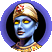

Мод для Heroes of Might and Magic IV: Full HD, новый баланс, умный компьютер, случайные карты прямо из игры, таймер хода и десятки исправлений старых ошибок.
A mod for Heroes of Might and Magic IV: Full HD, a new balance, a smarter computer player, random maps straight from the game, a turn timer and dozens of fixes for old bugs.
Та же игра, которую вы любите, — только без её старых болячек. Оригинальный exe не меняется: мод запускается своей копией, а всё новое можно выключить в лаунчере.
The game you love, without its old ailments. The original exe stays untouched: the mod runs its own copy, and everything new can be switched off in the launcher.
Игра в высоком разрешении, новое меню на весь экран, плавная карта и бой без рывков и лишней нагрузки на процессор.
The game in high resolution, a new full-screen main menu, a smooth map and combat without stutter or needless CPU load.
Существа, здания, навыки, классы героев, заклинания и артефакты: младшие уровни ближе к старшим, как в третьих Героях. Одна галочка в лаунчере возвращает оригинал.
Creatures, buildings, skills, hero classes, spells and artifacts: the lower levels closer to the higher ones, as in Heroes III. One box in the launcher brings the original back.

Ударная армия из нескольких героев, оборона городов, разведка, порталы, торговля и артефакты. Компьютер больше не стоит неделями и не теряет армии зря.
A strike army of several heroes, town defence, scouting, portals, trading and artifacts. The computer no longer stands still for weeks or loses armies for nothing.
Кнопка «Случайные карты» в окне новой игры: выбираете шаблон — карта генерируется и сразу открывается, в том числе в сетевой игре.
A "Random maps" button in the New game window: pick a template and the map is generated and opened at once, network games included.
Классический лимит на ход или шахматные часы 12-8-2 с банком времени и отдельным временем на бой — для честных сетевых партий.
A classic per-turn limit or a 12-8-2 chess clock with a time bank and separate time per battle — for fair network games.
Сколько существ убьёт удар или заклинание, будет ли ответ, куда встанет отряд, сколько раундов осталось у заклинания. Спокойная сетка без шахматки.
How many creatures a blow or a spell kills, whether the target strikes back, where the troop will stand, how many rounds a spell has left. A calm grid without the checkerboard.
Деление отрядов, перенос нескольких артефактов, найм всех существ, разбор каждой характеристики, колесо мыши в списках, свитки с картинкой заклинания.
Splitting stacks, moving several artifacts at once, recruiting everything, a breakdown of every stat, the mouse wheel in lists, scrolls that show their spell.
Вылеты на ходу компьютера, «вечные» партии, сломанные скрипты карт и кампаний, ошибки заклинаний и артефактов — всё, что мешало играть с 2003 года.
Crashes on the computer's turn, games that never end, broken map and campaign scripts, spell and artifact bugs — everything that got in the way since 2003.
H4Launcher.exe: он создаст копию игры для мода и ярлык на рабочем столе. Ваш оригинальный exe не изменится.H4Launcher.exe: it makes the mod's copy of the game and a desktop shortcut. Your original exe stays as it was.Чтобы вернуться к оригиналу, запустите игру старым ярлыком — мод в ней не загрузится.
To go back to the original, start the game from its old shortcut — the mod does not load there.